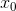

的偏导数。现在，我们希望一起计算 和 的偏导数。比如，我们来考虑求
的偏导数。现在，我们希望一起计算 和 的偏导数。比如，我们来考虑求  时 的偏导数 。另外，像 这样的由全部变量的偏导数汇总而成的向量称为梯度（gradient）。梯度可以像下面这样来实现。
时 的偏导数 。另外，像 这样的由全部变量的偏导数汇总而成的向量称为梯度（gradient）。梯度可以像下面这样来实现。在刚才的例子中，我们按变量分别计算了  和 的偏导数。现在，我们希望一起计算 和 的偏导数。比如，我们来考虑求 时 的偏导数 。另外，像 这样的由全部变量的偏导数汇总而成的向量称为梯度（gradient）。梯度可以像下面这样来实现。
def numerical_gradient(f, x):
h = 1e-4 # 0.0001
grad = np.zeros_like(x) # 生成和x形状相同的数组
for idx in range(x.size):
tmp_val = x[idx]
# f(x+h)的计算
x[idx] = tmp_val + h
fxh1 = f(x)
# f(x-h)的计算
x[idx] = tmp_val - h
fxh2 = f(x)
grad[idx] = (fxh1 - fxh2) / (2*h)
x[idx] = tmp_val # 还原值
return grad
函数 numerical_gradient(f, x) 的实现看上去有些复杂，但它执行的处理和求单变量的数值微分基本没有区别。需要补充说明一下的是，np.zeros_like(x) 会生成一个形状和 x 相同、所有元素都为 0 的数组。
函数 numerical_gradient(f, x) 中，参数 f 为函数，x 为 NumPy 数组，该函数对 NumPy 数组 x 的各个元素求数值微分。现在，我们用这个函数实际计算一下梯度。这里我们求点 (3, 4)、(0, 2)、(3, 0) 处的梯度。
>>> numerical_gradient(function_2, np.array([3.0, 4.0])) array([ 6., 8.])2 >>> numerical_gradient(function_2, np.array([0.0, 2.0])) array([ 0., 4.]) >>> numerical_gradient(function_2, np.array([3.0, 0.0])) array([ 6., 0.])
2实际上，虽然求到的值是
[6.0000000000037801, 7.9999999999991189]，但实际输出的是[6., 8.]。这是因为在输出 NumPy 数组时，数值会被改成“易读”的形式。
像这样，我们可以计算 在各点处的梯度。上例中，点 (3, 4) 处的梯度是 (6, 8)、点 (0, 2) 处的梯度是 (0, 4)、点 (3, 0) 处的梯度是 (6, 0)。这个梯度意味着什么呢？为了更好地理解，我们把 的梯度画在图上。不过，这里我们画的是元素值为负梯度 3 的向量（源代码在 ch04/gradient_2d.py 中）。
3后面我们将会看到，负梯度方向是梯度法中变量的更新方向。——译者注
如图 4-9 所示， 的梯度呈现为有向向量（箭头）。观察图 4-9，我们发现梯度指向函数 的“最低处”（最小值），就像指南针一样，所有的箭头都指向同一点。其次，我们发现离“最低处”越远，箭头越大。
图 4-9 的梯度
虽然图 4-9 中的梯度指向了最低处，但并非任何时候都这样。实际上，梯度会指向各点处的函数值降低的方向。更严格地讲，梯度指示的方向是各点处的函数值减小最多的方向 4。这是一个非常重要的性质，请一定牢记！
4高等数学告诉我们，方向导数 = cos(θ) × 梯度（θ 是方向导数的方向与梯度方向的夹角）。因此，所有的下降方向中，梯度方向下降最多。——译者注
机器学习的主要任务是在学习时寻找最优参数。同样地，神经网络也必须在学习时找到最优参数（权重和偏置）。这里所说的最优参数是指损失函数取最小值时的参数。但是，一般而言，损失函数很复杂，参数空间庞大，我们不知道它在何处能取得最小值。而通过巧妙地使用梯度来寻找函数最小值（或者尽可能小的值）的方法就是梯度法。
这里需要注意的是，梯度表示的是各点处的函数值减小最多的方向。因此，无法保证梯度所指的方向就是函数的最小值或者真正应该前进的方向。实际上，在复杂的函数中，梯度指示的方向基本上都不是函数值最小处。
函数的极小值、最小值以及被称为鞍点（saddle point）的地方，梯度为 0。极小值是局部最小值，也就是限定在某个范围内的最小值。鞍点是从某个方向上看是极大值，从另一个方向上看则是极小值的点。虽然梯度法是要寻找梯度为 0 的地方，但是那个地方不一定就是最小值（也有可能是极小值或者鞍点）。此外，当函数很复杂且呈扁平状时，学习可能会进入一个（几乎）平坦的地区，陷入被称为“学习高原”的无法前进的停滞期。
虽然梯度的方向并不一定指向最小值，但沿着它的方向能够最大限度地减小函数的值。因此，在寻找函数的最小值（或者尽可能小的值）的位置的任务中，要以梯度的信息为线索，决定前进的方向。
此时梯度法就派上用场了。在梯度法中，函数的取值从当前位置沿着梯度方向前进一定距离，然后在新的地方重新求梯度，再沿着新梯度方向前进，如此反复，不断地沿梯度方向前进。像这样，通过不断地沿梯度方向前进，逐渐减小函数值的过程就是梯度法（gradient method）。梯度法是解决机器学习中最优化问题的常用方法，特别是在神经网络的学习中经常被使用。
根据目的是寻找最小值还是最大值，梯度法的叫法有所不同。严格地讲，寻找最小值的梯度法称为梯度下降法（gradient descent method），寻找最大值的梯度法称为梯度上升法（gradient ascent method）。但是通过反转损失函数的符号，求最小值的问题和求最大值的问题会变成相同的问题，因此“下降”还是“上升”的差异本质上并不重要。一般来说，神经网络（深度学习）中，梯度法主要是指梯度下降法。
现在，我们尝试用数学式来表示梯度法，如式（4.7）所示。

式（4.7）的 η 表示更新量，在神经网络的学习中，称为学习率（learning rate）。学习率决定在一次学习中，应该学习多少，以及在多大程度上更新参数。
式（4.7）是表示更新一次的式子，这个步骤会反复执行。也就是说，每一步都按式（4.7）更新变量的值，通过反复执行此步骤，逐渐减小函数值。虽然这里只展示了有两个变量时的更新过程，但是即便增加变量的数量，也可以通过类似的式子（各个变量的偏导数）进行更新。
学习率需要事先确定为某个值，比如 0.01 或 0.001。一般而言，这个值过大或过小，都无法抵达一个“好的位置”。在神经网络的学习中，一般会一边改变学习率的值，一边确认学习是否正确进行了。
下面，我们用 Python 来实现梯度下降法。如下所示，这个实现很简单。
def gradient_descent(f, init_x, lr=0.01, step_num=100):
x = init_x
for i in range(step_num):
grad = numerical_gradient(f, x)
x -= lr * grad
return x
参数 f 是要进行最优化的函数，init_x 是初始值，lr 是学习率 learning rate，step_num 是梯度法的重复次数。numerical_gradient(f,x) 会求函数的梯度，用该梯度乘以学习率得到的值进行更新操作，由 step_num 指定重复的次数。
使用这个函数可以求函数的极小值，顺利的话，还可以求函数的最小值。下面，我们就来尝试解决下面这个问题。
问题：请用梯度法求 的最小值。
>>> def function_2(x): ... return x[0]**2 + x[1]**2 ... >>> init_x = np.array([-3.0, 4.0]) >>> gradient_descent(function_2, init_x=init_x, lr=0.1, step_num=100) array([ -6.11110793e-10, 8.14814391e-10])
这里，设初始值为 (-3.0, 4.0)，开始使用梯度法寻找最小值。最终的结果是 (-6.1e-10, 8.1e-10)，非常接近 (0, 0)。实际上，真的最小值就是 (0, 0)，所以说通过梯度法我们基本得到了正确结果。如果用图来表示梯度法的更新过程，则如图 4-10 所示。可以发现，原点处是最低的地方，函数的取值一点点在向其靠近。这个图的源代码在 ch04/gradient_method.py 中（但 ch04/gradient_method.py 不显示表示等高线的虚线）。
图 4-10 的梯度法的更新过程：虚线是函数的等高线
前面说过，学习率过大或者过小都无法得到好的结果。我们来做个实验验证一下。
# 学习率过大的例子：lr=10.0 >>> init_x = np.array([-3.0, 4.0]) >>> gradient_descent(function_2, init_x=init_x, lr=10.0, step_num=100) array([ -2.58983747e+13, -1.29524862e+12]) # 学习率过小的例子：lr=1e-10 >>> init_x = np.array([-3.0, 4.0]) >>> gradient_descent(function_2, init_x=init_x, lr=1e-10, step_num=100) array([-2.99999994, 3.99999992])
实验结果表明，学习率过大的话，会发散成一个很大的值；反过来，学习率过小的话，基本上没怎么更新就结束了。也就是说，设定合适的学习率是一个很重要的问题。
神经网络的学习也要求梯度。这里所说的梯度是指损失函数关于权重参数的梯度。比如，有一个只有一个形状为 2 × 3 的权重  的神经网络，损失函数用 L 表示。此时，梯度可以用
的神经网络，损失函数用 L 表示。此时，梯度可以用  表示。用数学式表示的话，如下所示。
表示。用数学式表示的话，如下所示。
的元素由各个元素关于 的偏导数构成。比如，第 1 行第 1 列的元素 表示当 稍微变化时，损失函数 L 会发生多大变化。这里的重点是， 的形状和 相同。实际上，式（4.8）中的 和 都是 2 × 3 的形状。
下面，我们以一个简单的神经网络为例，来实现求梯度的代码。为此，我们要实现一个名为 simpleNet 的类（源代码在 ch04/gradient_simplenet.py 中）。
import sys, os
sys.path.append(os.pardir)
import numpy as np
from common.functions import softmax, cross_entropy_error
from common.gradient import numerical_gradient
class simpleNet:
def __init__(self):
self.W = np.random.randn(2,3) # 用高斯分布进行初始化
def predict(self, x):
return np.dot(x, self.W)
def loss(self, x, t):
z = self.predict(x)
y = softmax(z)
loss = cross_entropy_error(y, t)
return loss
这里使用了 common/functions.py 中的 softmax 和 cross_entropy_error 方法，以及 common/gradient.py 中的 numerical_gradient 方法。simpleNet 类只有一个实例变量，即形状为 2×3 的权重参数。它有两个方法，一个是用于预测的 predict(x)，另一个是用于求损失函数值的 loss(x,t)。这里参数 x 接收输入数据，t 接收正确解标签。现在我们来试着用一下这个 simpleNet。
>>> net = simpleNet() >>> print(net.W) # 权重参数 [[ 0.47355232 0.9977393 0.84668094], [ 0.85557411 0.03563661 0.69422093]]) >>> >>> x = np.array([0.6, 0.9]) >>> p = net.predict(x) >>> print(p) [ 1.05414809 0.63071653 1.1328074] >>> np.argmax(p) # 最大值的索引 2 >>> >>> t = np.array([0, 0, 1]) # 正确解标签 >>> net.loss(x, t) 0.92806853663411326
接下来求梯度。和前面一样，我们使用 numerical_gradient(f, x) 求梯度（这里定义的函数 f(W) 的参数 W 是一个伪参数。因为 numerical_gradient(f, x) 会在内部执行 f(x)，为了与之兼容而定义了 f(W)）。
>>> def f(W): ... return net.loss(x, t) ... >>> dW = numerical_gradient(f, net.W) >>> print(dW) [[ 0.21924763 0.14356247 -0.36281009] [ 0.32887144 0.2153437 -0.54421514]]
numerical_gradient(f, x) 的参数 f 是函数，x 是传给函数 f 的参数。因此，这里参数 x 取 net.W，并定义一个计算损失函数的新函数 f，然后把这个新定义的函数传递给 numerical_gradient(f, x)。
numerical_gradient(f, net.W) 的结果是 dW，一个形状为 2 × 3 的二维数组。观察一下 dW 的内容，例如，会发现 中的 的值大约是 0.2，这表示如果将 增加 h，那么损失函数的值会增加 0.2h。再如， 对应的值大约是 -0.5，这表示如果将 增加 h，损失函数的值将减小 0.5h。因此，从减小损失函数值的观点来看， 应向正方向更新， 应向负方向更新。至于更新的程度， 比 的贡献要大。
对应的值大约是 -0.5，这表示如果将 增加 h，损失函数的值将减小 0.5h。因此，从减小损失函数值的观点来看， 应向正方向更新， 应向负方向更新。至于更新的程度， 比 的贡献要大。
另外，在上面的代码中，定义新函数时使用了“def f(x):…”的形式。实际上，Python 中如果定义的是简单的函数，可以使用 lambda 表示法。使用 lambda 的情况下，上述代码可以如下实现。
>>> f = lambda w: net.loss(x, t) >>> dW = numerical_gradient(f, net.W)
求出神经网络的梯度后，接下来只需根据梯度法，更新权重参数即可。在下一节中，我们会以 2 层神经网络为例，实现整个学习过程。
W，这里使用的numerical_gradient()和之前的实现稍有不同。不过，改动只是为了对应多维数组，所以改动并不大。这里省略了对代码的说明，想知道细节的读者请参考源代码（common/gradient.py）。